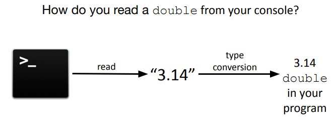
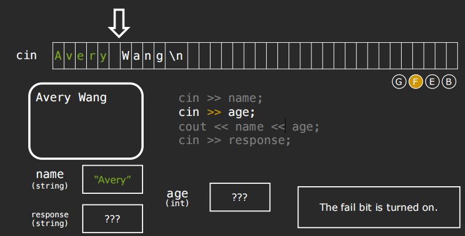
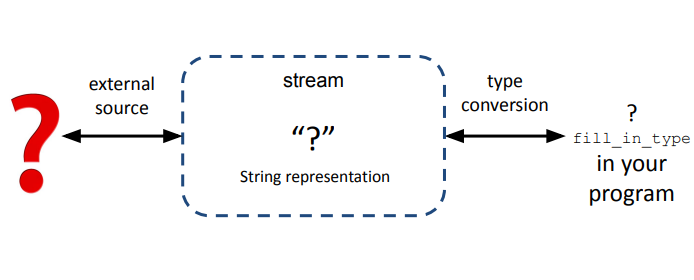
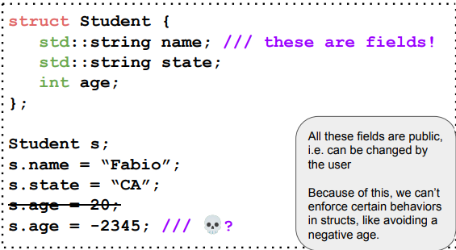
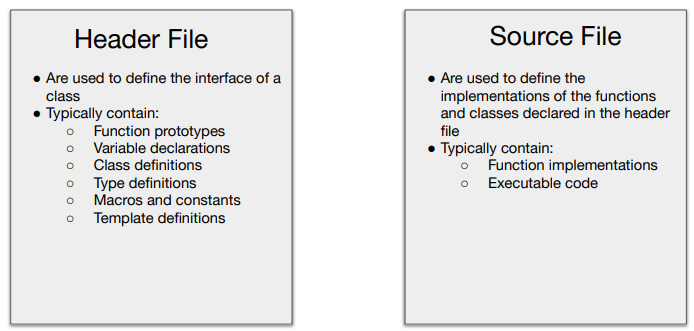

CS106L¶
约 1109 个字 380 行代码 预计阅读时间 8 分钟
Streams¶
Designing and implementing a general input/output facility for a programming language is notoriously difficult
- Bajarne Stroustrup
Streams: a general input/output abstraction for C++.
Abstractions often provide a consistent interface, and in the case of streams the interface is for reading and writing data.
Stringstreams¶
- a way to treat strings as streams
- stringstreams are useful for use-cases that deal with mixing data types
int main() {
ostringstream oss("Ito En Green Tea ", stringstream::ate);
cout << oss.str() << endl;
oss << 16.9 << “ Ounce ”;
//prints ”Ito En Green Tea 16.9 Ounce “
cout << oss.str() << endl;
istringstream iss("16.9 Ounces");
double amount, string unit;
iss >> amount >> unit;
// amount is now 8.45
amount /= 2;
}
- >> extracts the next variable of a certain type, up to the next whitespace.
- The >> and << operators return a reference to the stream itself, so in each instance the stream is the left-hand operand.
Implementing stringToInteger
int stringToInteger(const string& str) {
istringstream iss(str);
int result;
iss >> result; // problem: what if this fails?
return result;
}
State bits¶
- Good bit: ready for read/write
- Fail bit: previous operation failed, all future operations frozen. (Type mismatch, file can't be opened, seekg failed.)
- EOF bit: previous operation reached the end of buffer content.(Readched the end of the buffer.)
- Bad bit: external error, likely irrecoverable.(Could not move characters to buffer from external source. (e.g. the file you are reading from suddenly is deleted))
complete error-checking for stringToInteger
int stringToInteger(const string& str) {
istringstream iss(str);
int result;
iss >> result;
if (iss.fail()) throw domain_error(……)；
char remain;
iss >> remain;
if (!iss.fail()) throw domain_error(……); //Ensure no characters after the integer
return result;
//Equivalent: >> returns iss itself, which can ack like a boolean for iss.fail()
}
//Compelete version
int stringToInteger(const string& str) {
istringstream iss(str);
int result;
char remain;
if(!(iss >> result) || iss >> remain) {
throw domain_erroe("Error!");
}
return result;
}
cout and cin¶
- Known as the standard
iostreams
cout is a stream.
The std::cout stream is an instance of std::ostream which represents the standard output stream.
From external source to program¶

Buffered stream: characters are stored in an intermediate buffer before being moved to the external source.
To push the characters to the external source, the stream must be “flushed".
int main() {
cout << "CS";
cout << 106;
cout << flush; //"CS106" only shows up at this point.
cout << 'L';
cout <<endl;// include a flush
int num;
cout << "CS";
cout << 106;
cout << 'L';
cin >> num; //cout is flushed when cin is waiting for user input.
}
//Option 1: flush every int
for (int i = 0; i < 100000; ++i) {
cout << i << endl;
}
//Option 2: flush only at the end
for (int i = 0; i < 100000; ++i) {
cout << i << '\n';
}
cout << flush;
An input stream¶
std::cinis the console input stream
3 reasons why >> with cin is a nightmare
cinreads the entire line into the buffer but extracts whitespace-separated tokens.- Trash in the buffer will make
cinnot prompt the user for input at the right time. - When
cinfails, all futurecinoperations fail too.
Recap the example in lec2:

getline()
cout << "What is your name? "; // sidenote: no flush needed! why?
//cin >> name;
getline(cin, name);
Bugs for getline()
int main() {
istringstream iss ("16.9\n 24");
double val;
string line;
iss >> val; //val = 16.9
getline(iss, line); // line = ""
//To fix:
string line;
iss >> val;
iss.ignore();
getline(iss, line); // line = 24;
}
Generalizing the Stream¶

Stream allow for a universal way of dealing with external data.
Classifying different types of streams
Input streams(I): a way to read data from a source
- Are inherited from
std::istream - ex. reading in something from the console(
std::cin) - primary operator:
>>(called the extraction operator)
Output streams(O): a way to write data to a destination
- Are inherited from
std::ostream - ex. writing out something to the console(
std::cout) - primary operator:
<<(called the insertion operator)
Modern C++ Types¶
size_t¶
string str = "Hello World!";
for(int i = 0; i < str.size(); ++i) {
cout << str[i] << endl;
}
//raise Warning!
//int->both positive and negative
//This comparison is dangerous since it compares signed(i) with unsigned(str.size())
//
for(size_t i = 0;){
blablabla
}
auto
If the type is not important, then the compiler can figure it out for you.
Question: C string versus C++ string?(remained)
When to use auto?
- When you don't care what the type is (iterators).
- When its type is clear from context (templates).
- When you don't know what the type is (lambdas).
- Don't use it unnecessarily for return types.
pair/tuple functions¶
auto prices = make_pair(3.4, 5);
auto values = make_tuple(3, 4, "hi");
//access via get/set
prices.first = prices.second;
get<0>(values) = get<1>(values); // values = {4, 4, "hi"}
auto [a,b] = prices;
const auto& [x, y, z] = values;
C++ 17 allow structured bindings, allowing you to unpack the variables in a pair.
pair<int,int> findPriceRange(int dist) {
blabla;
return make_pair(min,max);
}
int main() {
int dist = 6452;
auto [min,max] = findPriceRange(dist);
}
struct¶
A struct is a collection of named variables grouped together.
struct Course {
string code;
Time stratTime;
Time endTime;
vector<string> instructors;
}
struct PriceRange {
int min;
int max;
}
PriceRange findPriceRange(int dist) {
int min = ;
int max = ;
return PriceRange(min,max);
}
int main() {
int dist = 6452;
PriceRange p = findPriceRange(dist);
cout << p.min << p.max; //access the struct
}
Initialization¶
Uniform initialization: We don't have to specify the types-automatically deduced.
int main() {
Course now {"CS106L", {15,30}, {16,30}, {"Wang","Zeng"}};
vector<int> vec{3,1,4,1,5,9};
vector<int> vec1{3}; //vector = {3}
vector<int> vec2(3); //vector = {0, 0, 0}
}
The Standard Template Library(STL)¶
Sequence Containers¶
Provides access to sequence of elements.
Includes:
std::vector<T>std::deque<T>std::list<T>-
std::array<T> -
std::forward_list<T>
std::vector¶
A vector represents a sequence of elements of any type.
std::vector<int> vecInt;
std::vector<string> vecStr;
std::vector<myStruct> vecStrut;
std::vector<std::vector<string>> vecOfVec;
Why doesn't std::vector bounds check by default?
If your program runs correctly, bound checking will just slow your code down.
vector <int> v; //Create an empty vector
vector<int> v(n); // Create a vector with n copies of zero
vector<int> v(n,k); //Creae a vector with ncopies of a value k
v.push_back(k); // Add k to the end of the vector
v.clear(); // Clear vector
int k = v.at(i); int k = v[i]; // Get the element at index i
if (v.empty()) // Check if the vector is empty
v.at(i) = k; // Replace the element at index i
std::deque¶
- Stands for a double ended queue.
- Unlike a vector, it is possible (and fast) to
push_frontandpop_front!
Downsides of std::deque<T>:
Deques support fast push_front operations. However, for other common operations like element access, vector will always outperform a deque.
Container Adaptors¶
Recall stacks(FILO) and queues(FIFO).
How can we implement stack and queue using the containers we have?
Step 1:
- Stack: Just limit the functionality of a vector/deque to only allow
push_backandpop_back. - Queue: Just limit the functionality of a deque to only allow
push_backandpop_front.
Step 2: Only allow access to the top element.
For this reason, stacks and queues are known as container adaptors.
Associative Containers¶
- Have no idea of a sequence.
- Data is accessed using the key instead of indexes.
Includes:
std::map<T1,T2>std::set<T>std::unordered_map<T1,T2>std::unordered_set<T>
int main() {
map <string, int> m;
string word;
m[word];//automatically create an entry and default initalize it.
m.at(word);//thorw an error
}
Iterators¶
How do we iterate over associative containers?
Iterators allow iteration over any container, whether it is ordered or not.
Iterators let us view a non-linear collection in a linear manner.
set<int>::iterator iter = integers.begin();
while (iter != integers.end()) {
cout << *iter << endl;
++iter;
}
cout << endl;
// Alternative #2:
for (auto iter = integers.begin(); iter != integers.end(); ++iter) {
cout << *iter << endl;
}
// Most commonly used:
// (We'll see where iterators are most useful later on)
for (int elem : integers) {
cout << elem << endl;
}
Summary of the essential iterator operations
- Create iterator
std::set<int>::iterator iter = mySet.begin() - Dereference iterator to read value currently pointed to
int val = *iter - Advance iterator
iter++ - Compare against another iterator(.end() iterator)
Note: Iterators let us go through sequences of elements in a standarised way.
int numOccurrences(vector<int>& cont, int elemToCount) {
int counter = 0;
vector<int>::iterator iter;
for(iter = cont.begin();iter != cont.end(); ++iter) {
if(*iter == elemToCount) {
++ counter;
}
}
return counter;
}
/*I can change the data structure to std::list<int> or any other I want without changing the logic of the code.*/
Map Iterators¶
Recap std::pair
Quicker ways to make a pair:
std::pair<string, int> p {"Phone number", 6507232300};
std::make_pair("Phone number", 6507232300);
//Difference: make_pair automatically deduses the type!
auto time = std::make_pair(1, 45);
Recap std::multimap
-
a map that permits multiple entries with the same key
-
Doesn't have
[]operator. - add elements by calling
.inserton a key valuestd::pair
std::multimap<int,int> myMap;
myMap.insert(make_pair(3,3));
myMap.insert({3,12});
cout << myMap.count(3) << endl; // prints 2
Map Iterators
- Dereferencing a
set<string>iterator gives you astring. - Dereferencing a
map<string, int>iterator gives you anstd::pair<string, int>
map<int, int> m;
map<int, int> :: iterator i = m.begin();
map<int, int> :: iterator end = m.end();
while(i!=end) {
cout << (*i).first << (*i).second <<endl;
++i;
}
Iterator Types¶
Similarities:
- Can be created from existing iterator
- Can be advanced using
++ - Can be compared with
==,!=
Input Iterators
- For sequential, single-pass input
-
Read only i.e, can only be dereferenced on right side of expression
-
Use cases:
findandcount, Input streams.
Templates¶
A generic function
template <typename T>
pair<T, T> my_minmax(T a, T b) {
if(a < b) return {a, b};
else return {b, a};
}
// Scope of template argument T limited to function
In the code above:
templatedeclares the next function is a template.typenamespecifies T is some arbitrary type.
Call the function:
my_minmax<string>("Anna", "Avery"); // Expilicitly states T = string
//Compiler replaces every T with string
Concept Lifting¶
write generic functions
How many times does the integer [val] appear in an entire vector of integers?
template<>
int countOccureneces(const vector<int>& vec, int val) {
int count = 0;
for(size_t i = 0; i < vec.size(); ++i) {
if(vec[i] == val) ++ count;
}
return count;
}
//When we called countOccurences with a list,map or a set;
//We are indexing through a potentially unindexable collection.
template <typename Collection, typename DataType>
int countOccurences(const Collection& list, DataType val) {
int count = 0;
for(auto iter = list.begin(); iter != list.end(); ++iter) {
if(*iter == val) ++count;
}
return count;
}
//We can even give control of where the start and end should be
template <typename InputIt, typename DataType>
int countOccurences(InputIt begin, InputIt end, DataType val) {
int count = 0;
for( auto iter = begin; iter != end; ++iter) {
if(*iter == val) ++count;
}
return count;
}
- A predicate is a function which takes in some number of arguments and returns a boolean.
bool isEqualTo3(int val) {
return val == 3;
}// Unary Predicate
bool isDivisibleBy(int dividend, int divisor) {
return dividend % divisor == 0;
}// Binary Predicate
Implicit interfaces¶
- The compiler literally replaces each template parameter with whatever you instantiate it with.
- A template function defines an implicit interface that each template parameter must satisfy.
- Each template parameter must have the operations the function assumes it has.
Functions¶
Function pointers¶
- A predicate is a function which takes in some number of arguments and returns a boolean.
bool isEqualTo3(int val) {
return val == 3;
}// Unary Predicate
bool isDivisibleBy(int dividend, int divisor) {
return dividend % divisor == 0;
}// Binary Predicate
equals[val] is essentially a predicate function. Further generalize the function countOccurences:
template <typename InputIt, typename UniPred>
int countOccurences(InputIt begin, InputIt end, UniPred predicate) {
int count = 0;
for(auto iter = begin; iter != end; ++iter) {
if(predicate(*iter)) ++count;
}
return count;
}
bool isLessThan5(int val) {
return val < 5;
}
int main() {
vector<int> vec{1, 3, 5, 7, 9};
countOccurences(vec.begin(), vec.end(), isLessThan5);
}
- Problem 1: what if we wanted to use some upper limit other than 5?
- Problem 2: scope issue with having a variable limit in the calling function.
- Problem 3: we can't add an extra parameter t the predicate function.
bool isLessThanLimit(int val, int limit) {
return val < limit;
}// template error!
//So predicate in this case must be a unary predicate beacuse of how we use it in countOccurences.
Lambda Functions¶
int main() {
vector<int> vec{1, 3, 5, 7, 9};
int limit = 5;
auto isLessThanLimit = [limit](auto val) -> bool {
return val < limit;
}
countOccurences(vec.begin(), vec.end(), isLessThanLimit);
}
Take a specific look of lambda function:
auto: We don't know the type, ask compiler.[limit]: capture clause, gives access to outside variables.(auto val): parameter list, can use auto.bool: return type, optional.
So anatomy of a Lambda function:
Lambdas are a type of function object("functor")
Algorithms¶
STL_Summary¶
Abstraction in the STL
Abstractions allow us to express the general structure of a problem instead of the particulars of its implementation.
Rather than solve specific instances, solve the problem in a general setting!
Can we keep track of a collection of basic types, regardless of what the type is?
Containers let us perform operations on basic types, regardless of what the basic type is.
Many programs require a collection of basic types:
- A
vector<int>representing student ages - A
map<string, int>of names to phone numbers
Can we perform operations on containers regardless of what the container is?
Iterators allow us to abstract away from the container being used.
Operations like sorting, searching, filtering, partitioning and more can be written to work with almost any containers.
Can we operate on iterators regardless of what type of container the iterator is for?
The STL contains pre-written algorithms that:
- operate on iterators, which let them work on many types of containers, and
- often apply functors, which allows generalization of the algorithm's applications.
OOP¶
Classes¶
Classes are user-defined types that allow a user to encapsulate data and functionality using member variables and member functions.
Comparing struct and class
- structures which are classes without access restrictions.

-
Classes have public and private sections!
-
User can access the public stuff, but is restricted from accessing the private stuff.
Header File vs Source Files

Class design(Student Class)¶
-
Constructor
-
Private member functions/variables
- Public member functions(interface for a user)
- Destructor
Constructor
- The constructor initializes the state of newly created objects.
// .h File
class Student {
private:
std::string name;
std::string state;
int age;
public:
//Constructor for our student
Student(std::string name, std::string state, int age);
//method to get name, state, and age
std::string getName();
std::string getState();
int getAge();
}
// .cpp file
Student::Student(std::string name, std::string state, int age) {
this->name = name;
this->state = state;
this->age = age;
}
// we need to use our class as our namespace when defining our member fuctions
//Use this keyword to disambiguate which 'name' you are referring to
Destructor
// .cpp file
Student::~Student() {
// free/deallocate any data here
}
//In student class we are not dynamically allocating any data by using the new keyword, Nonetheless desturctors are an important part of an object's lifecycle.
Inheritance¶
- Polymorphism: Different objects might need to have the same interface.
- Extensibility: Inheritance allow you to extend a class by creating a subclass with specific properties.
// .h file
class Shape {
public:
virtual double area () const = 0;
// This is a virtual function, meaning that it is instantiated in the base class but overwritten in the subclass.
}
class Circle : public Shape { //Here we declare the Circle class which inherits from the Shape class
public:
Circle(double radius) : _radius(radius) {};
//Here we have our constructor using list initialization construction
double area() const {
return 3.14 * _radius * _radius;
}
private:
double _radius;
}
Const Correctness¶
std::string stringify(const Student& s) {
return s.getName() + "is" + std::to_string(s.getAge()) + " years old.";
}
//compile error!!
- By passing in
sasconstwe made a promise to not modifys. - The compiler doesn't know whether or not
getName()andgetAge()modifys.
Template Classes¶
// .h file
template <typename T>
class Container {
public:
Container (T val);
T getValue();
private:
T value;
}
// .cpp flie
template <class T>
Container<T>::Container(T val) {
this->value = val;
}
template <typename T>
T Container<T>::getValue() {
return value;
}
Operators¶
How does C++ know how to apply operators to user-defined classes?
C++ tries to call these functions:
cout.operator<<(v.operator[](0));
v.operator[](1).operator+=("!");
// Or
operator<<(cout, v.operator[](0));
创建日期: 2024年3月3日 16:01:25